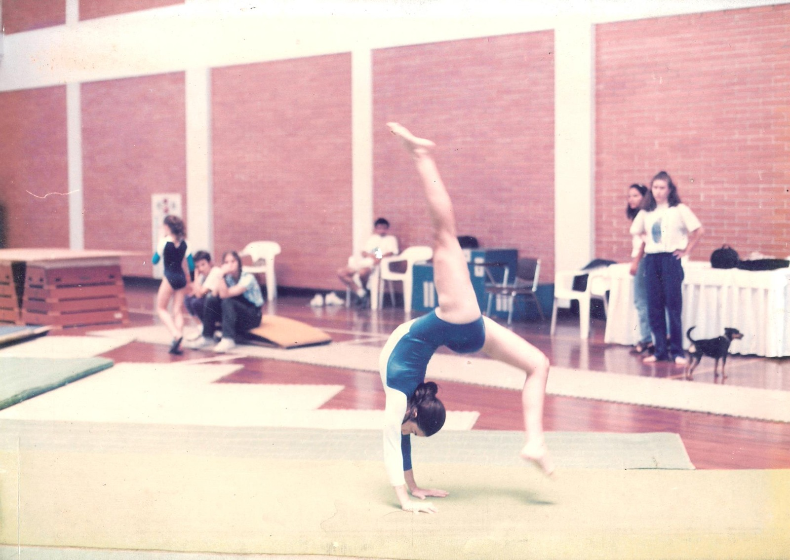
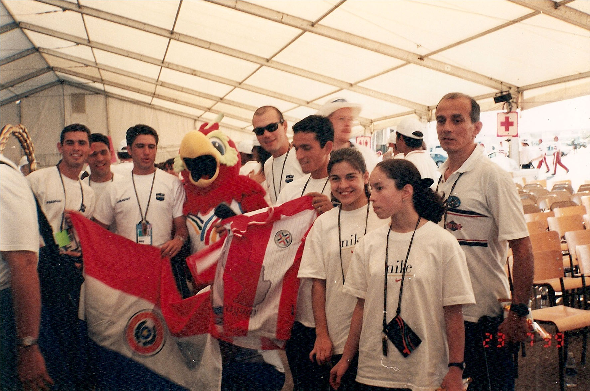
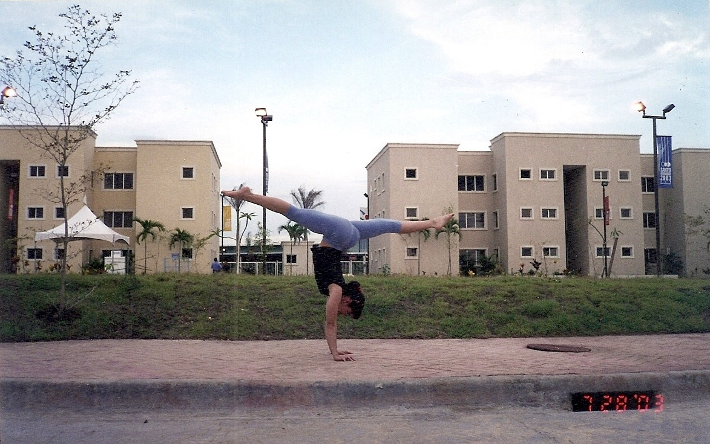

Gisselle Jara



De gimnasta a formadora de sueños
Desde pequeña, la gimnasia fue más que un deporte: fue su pasión, su desafío y su motor para alcanzar lo imposible. Sus primeros pasos en el Centro Paraguayo Japonés la llevaron a competir por Acrobacias y, más adelante, a portar con orgullo la bandera de Casa España en escenarios internacionales, como la Copa de Puerto Rico.
Fue parte de la selección paraguaya de gimnasia en la década de los 2000, representando al país en Sudamericanos infantojuveniles, dos ediciones de los Juegos Odesur (Cuenca 1998, Curitiba 2002), dos Juegos Panamericanos (Winnipeg 1999, Santo Domingo 2003) y diversas copas continentales. Cada competencia no solo fue una prueba de destreza, sino un recordatorio de que con esfuerzo y determinación, los límites pueden romperse.
Bajo la guía del entrenador Pablo Moreno, desafió las barreras de la gimnasia paraguaya, ejecutando por primera vez en el país movimientos de alta dificultad, como la soltada Jaeger o Hristakieva en barras asimétricas. Su mentora, Ana Fedriani, líder de Casa España, fue un pilar fundamental en su carrera y sigue siendo un referente en su camino. Además, tuvo el honor de entrenar en prestigiosas academias como el Centro Nacional de Alto Rendimiento Deportivo de Argentina (CENARD), bajo la tutela de la icónica Rosa Ichkova, entrenadora de la campeona olímpica Roza Galieva.
Hoy, esa misma pasión que la llevó a representar a Paraguay en el mundo es la que impulsa su proyecto: Gistar. Un espacio donde niñas y niños pueden descubrir su talento, desafiar sus propios límites y convertirse en las futuras promesas de la gimnasia artística. Su misión es clara: transmitir conocimientos, inspirar disciplina y, sobre todo, demostrar que los sueños se construyen con dedicación y amor por el deporte.
Comprometida con la formación de nuevas generaciones, sigue perfeccionándose en el arte del entrenamiento y juzgamiento, porque cree que el crecimiento nunca termina y que el mayor triunfo es ver a sus gimnastas brillar.
Bienvenidos a Gistar. Donde los sueños se entrenan, y las estrellas nacen.